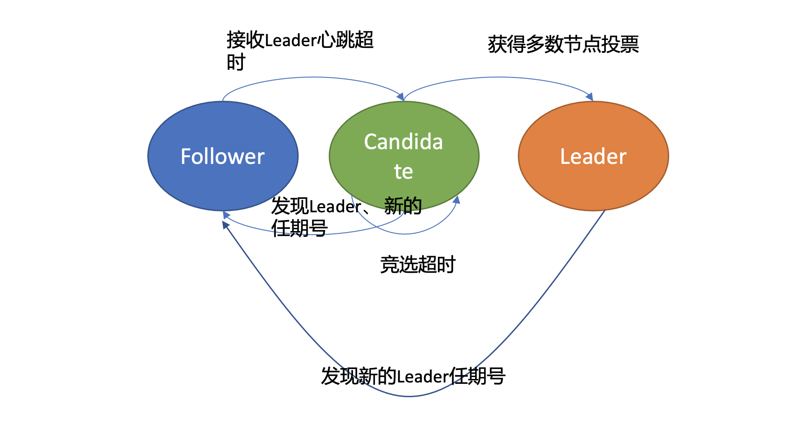
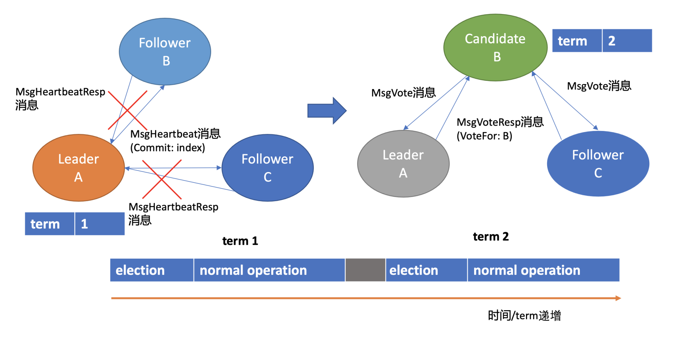
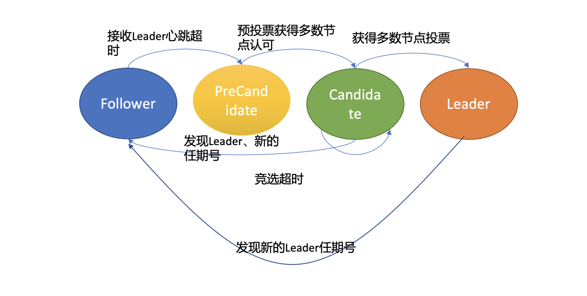
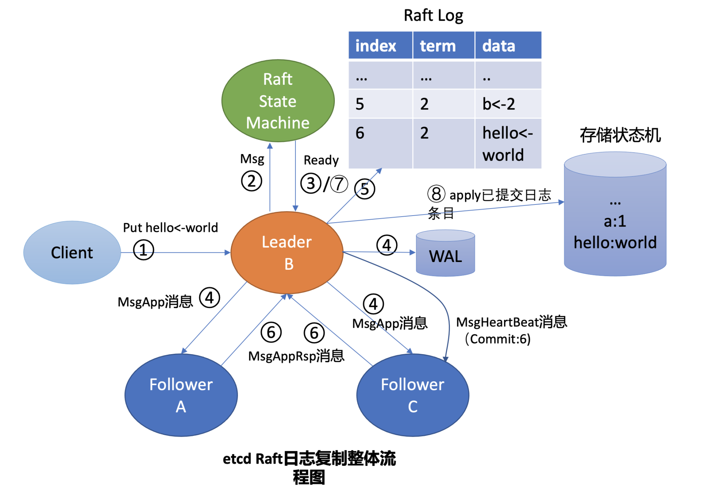
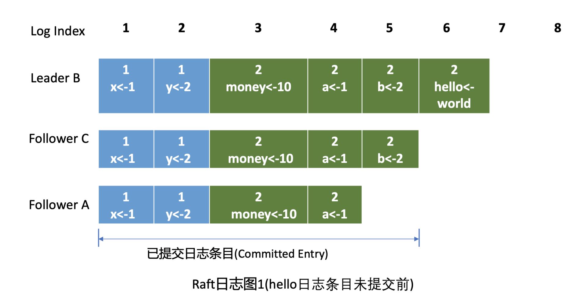

主要解决问题点 #
- Leader选举，Leader故障后集群能快速选出新Leader；
- 日志复制， 集群只有Leader能写入日志， Leader负责复制日志到Follower节点，并强制Follower节点与自己保持相同；
- 安全性，一个任期内集群只能产生一个Leader、已提交的日志条目在发生Leader选举时，一定会存在更高任期的新Leader日志中、各个节点的状态机应用的任意位置的日志条目内容应一样等。
角色 #
| 角色 | 说明 | |
|---|---|---|
| Leader | 主节点 | 同一时刻只有一个 Leader，负责协调和管理其他节点. 唯一性，拥有同步日志的特权，需定时广播心跳给Follower节点，以维持领导者身份。 |
| Candidate | 候选者 | 每一个节点都可以成为 Candidate，节点在该角色下才可以被选为新的 Leader |
| Follower | Leader 的跟随者 | 不可以发起选举 |

当Follower节点接收Leader节点心跳消息超时后，它会转变成Candidate节点，并可发起竞选Leader投票，若获得集群多数节点的支持后，它就可转变成Leader节点
graph RL F[Follower] C[Candidate] L[Leader] L-->|发现更大term|F C-->|发现有了新的任期或新主|F F -->|长时间没有收到leader消息,开始竞选|C C-->|收到一半以上选票|L
流程 #
- 初始化时，所有节点均为 Follower 状态。
- 开始选主时，所有节点的状态由 Follower 转化为 Candidate，并向其他节点发送选举请求。
- 其他节点根据接收到的选举请求的先后顺序，回复是否同意成为主。这里需要注意的是，在每一轮选举中，一个节点只能投出一张票。
- 若发起选举请求的节点获得超过一半的投票，则成为主节点，其状态转化为 Leader，其他节点的状态则由 Candidate 降为 Follower。Leader 节点与 Follower 节点之间会定期发送心跳包，以检测主节点是否活着。
- 当 Leader 节点的任期到了，即发现其他服务器开始下一轮选主周期时，Leader 节点的状态由 Leader 降级为 Follower，进入新一轮选主。
etcd Leader选举原理 #
下面以Leader crash场景为案例，介绍一下etcd Leader选举原理
假设集群总共3个节点，A节点为Leader，B、C节点为Follower。

Leader维持身份 #
如上Leader选举图左边部分所示， 正常情况下，Leader节点会按照心跳间隔时间，定时广播心跳消息（MsgHeartbeat消息）给Follower节点，以维持Leader身份。 Follower收到后回复心跳应答包消息（MsgHeartbeatResp消息）给Leader。
细心的你可能注意到上图中的Leader节点下方有一个任期号（term）， 它具有什么样的作用呢？
这是因为Raft将时间划分成一个个任期，任期用连续的整数表示，每个任期从一次选举开始，赢得选举的节点在该任期内充当Leader的职责，随着时间的消逝，集群可能会发生新的选举，任期号也会单调递增。
通过任期号，可以比较各个节点的数据新旧、识别过期的Leader等，它在Raft算法中充当逻辑时钟，发挥着重要作用。
自愈 #
Leader crash后，etcd是如何自愈的呢?
如上Leader选举图右边部分所示，当Leader节点异常后，Follower节点会接收Leader的心跳消息超时，当超时时间大于竞选超时时间后，它们会进入Candidate状态。
这里要提醒下你，etcd默认心跳间隔时间（heartbeat-interval）是100ms， 默认竞选超时时间（election timeout）是1000ms， 你需要根据实际部署环境、业务场景适当调优，否则就很可能会频繁发生Leader选举切换，导致服务稳定性下降。
进入Candidate状态的节点，会立即发起选举流程，自增任期号，投票给自己，并向其他节点发送竞选Leader投票消息（MsgVote）。
C节点收到Follower B节点竞选Leader消息后，这时候可能会出现如下两种情况：
-
C节点判断B节点的数据至少和自己一样新、B节点任期号大于C当前任期号、并且C未投票给其他候选者，就可投票给B。这时B节点获得了集群多数节点支持，于是成为了新的Leader。
-
恰好C也心跳超时超过竞选时间了，它也发起了选举，并投票给了自己，那么它将拒绝投票给B，这时谁也无法获取集群多数派支持，只能等待竞选超时，开启新一轮选举。
Raft为了优化选票被瓜分导致选举失败的问题，引入了随机数，每个节点等待发起选举的时间点不一致，优雅的解决了潜在的竞选活锁，同时易于理解。
Leader选出来后，它什么时候又会变成Follower状态呢？从上面的状态转换关系图中你可以看到，如果现有Leader发现了新的Leader任期号，那么它就需要转换到Follower节点。A节点crash后，再次启动成为Follower，假设因为网络问题无法连通B、C节点，这时候根据状态图， 我们知道它将不停自增任期号，发起选举。等A节点网络异常恢复后，那么现有Leader收到了新的任期号，就会触发新一轮Leader选举，影响服务的可用性。
然而A节点的数据是远远落后B、C的，是无法获得集群Leader地位的，发起的选举无效且对集群稳定性有伤害。
那如何避免以上场景中的无效的选举呢？
在etcd 3.4中，etcd引入了一个PreVote参数（默认false），可以用来启用PreCandidate状态解决此问题，如下图所示。 Follower在转换成Candidate状态前，先进入PreCandidate状态，不自增任期号， 发起预投票。若获得集群多数节点认可，确定有概率成为Leader才能进入Candidate状态，发起选举流程。 
因A节点数据落后较多，预投票请求无法获得多数节点认可，因此它就不会进入Candidate状态，导致集群重新选举。
这就是Raft Leader选举核心原理，使用心跳机制维持Leader身份、触发Leader选举，etcd基于它实现了高可用，只要集群一半以上节点存活、可相互通信，Leader宕机后，就能快速选举出新的Leader，继续对外提供服务。
日志复制 #
Raft日志复制原理 #
假设在上面的Leader选举流程中，B成为了新的Leader，它收到put提案后，它是如何将日志同步给Follower节点的呢？ 什么时候它可以确定一个日志条目为已提交，通知etcdserver模块应用日志条目指令到状态机呢？
Leader收到put请求后，向Follower节点复制日志的整体流程图

首先Leader收到client的请求后，etcdserver的KV模块会向Raft模块提交一个put hello为world提案消息（流程图中的序号2流程）， 它的消息类型是MsgProp。
Leader的Raft模块获取到MsgProp提案消息后，为此提案生成一个日志条目，追加到未持久化、不稳定的Raft日志中，随后会遍历集群Follower列表和进度信息，为每个Follower生成追加（MsgApp）类型的RPC消息，此消息中包含待复制给Follower的日志条目。
Raft日志 #
下图是Raft日志复制过程中的日志细节图，简称日志图1。
在日志图中，最上方的是日志条目序号/索引，日志由有序号标识的一个个条目组成，每个日志条目内容保存了Leader任期号和提案内容。最开始的时候，A节点是Leader，任期号为1，A节点crash后，B节点通过选举成为新的Leader， 任期号为2。
日志图1描述的是hello日志条目未提交前的各节点Raft日志状态。 
Leader是如何知道从哪个索引位置发送日志条目给Follower，以及Follower已复制的日志最大索引是多少呢？Leader会维护两个核心字段来追踪各个Follower的进度信息，
一个字段是NextIndex， 它表示Leader发送给Follower节点的下一个日志条目索引。
一个字段是MatchIndex， 它表示Follower节点已复制的最大日志条目的索引，比如上面的日志图1中C节点的已复制最大日志条目索引为5，A节点为4。
日志条目什么时候才会追加到稳定的Raft日志中呢？Raft模块负责持久化吗？etcd Raft模块设计实现上抽象了网络、存储、日志等模块，它本身并不会进行网络、存储相关的操作，上层应用需结合自己业务场景选择内置的模块或自定义实现网络、存储、日志等模块。
上层应用通过Raft模块的输出接口（如Ready结构），获取到待持久化的日志条目和待发送给Peer节点的消息后（如上面的MsgApp日志消息），需持久化日志条目到自定义的WAL模块，通过自定义的网络模块将消息发送给Peer节点。
日志条目持久化到稳定存储中后，这时候你就可以将日志条目追加到稳定的Raft日志中。即便这个日志是内存存储，节点重启时也不会丢失任何日志条目，因为WAL模块已持久化此日志条目，可通过它重建Raft日志。
etcd Raft模块提供了一个内置的内存存储（MemoryStorage）模块实现，etcd使用的就是它，Raft日志条目保存在内存中。网络模块并未提供内置的实现，etcd基于HTTP协议实现了peer节点间的网络通信，并根据消息类型，支持选择pipeline、stream等模式发送，显著提高了网络吞吐量、降低了延时。
分析etcd是如何与Raft模块交互，获取待持久化的日志条目和发送给peer节点的消息。正如刚刚讲到的，Raft模块输入是Msg消息，输出是一个Ready结构，它包含待持久化的日志条目、发送给peer节点的消息、已提交的日志条目内容、线性查询结果等Raft输出核心信息。
etcdserver模块通过channel从Raft模块获取到Ready结构后（流程图中的序号3流程），因B节点是Leader，它首先会通过基于HTTP协议的网络模块将追加日志条目消息（MsgApp）广播给Follower，并同时将待持久化的日志条目持久化到WAL文件中（流程图中的序号4流程），最后将日志条目追加到稳定的Raft日志存储中（流程图中的序号5流程）。
各个Follower收到追加日志条目（MsgApp）消息，并通过安全检查后，它会持久化消息到WAL日志中，并将消息追加到Raft日志存储，随后会向Leader回复一个应答追加日志条目（MsgAppResp）的消息，告知Leader当前已复制的日志最大索引（流程图中的序号6流程）。
Leader收到应答追加日志条目（MsgAppResp）消息后，会将Follower回复的已复制日志最大索引更新到跟踪Follower进展的Match Index字段，如下面的日志图2中的Follower C MatchIndex为6，Follower A为5，日志图2描述的是hello日志条目提交后的各节点Raft日志状态。
 最后Leader根据Follower的MatchIndex信息，计算出一个位置，如果这个位置已经被一半以上节点持久化，那么这个位置之前的日志条目都可以被标记为已提交。
最后Leader根据Follower的MatchIndex信息，计算出一个位置，如果这个位置已经被一半以上节点持久化，那么这个位置之前的日志条目都可以被标记为已提交。
在我们这个案例中日志图2里6号索引位置之前的日志条目已被多数节点复制，那么他们状态都可被设置为已提交。Leader可通过在发送心跳消息（MsgHeartbeat）给Follower节点时，告知它已经提交的日志索引位置。
最后各个节点的etcdserver模块，可通过channel从Raft模块获取到已提交的日志条目（流程图中的序号7流程），应用日志条目内容到存储状态机（流程图中的序号8流程），返回结果给client。
通过以上流程，Leader就完成了同步日志条目给Follower的任务，一个日志条目被确定为已提交的前提是，它需要被Leader同步到一半以上节点上。以上就是etcd Raft日志复制的核心原理。
安全性 #
如果在上面的日志图2中，Leader B在应用日志指令put hello为world到状态机，并返回给client成功后，突然crash了，那么Follower A和C是否都有资格选举成为Leader呢？
从日志图2中我们可以看到，如果A成为了Leader那么就会导致数据丢失，因为它并未含有刚刚client已经写入成功的put hello为world指令。
Raft算法如何确保面对这类问题时不丢数据和各节点数据一致性呢？
这就是Raft的第三个子问题需要解决的。Raft通过给选举和日志复制增加一系列规则，来实现Raft算法的安全性。
选举规则 #
当节点收到选举投票的时候，需检查候选者的最后一条日志中的任期号，若小于自己则拒绝投票。如果任期号相同，日志却比自己短，也拒绝为其投票。
比如在日志图2中，Folllower A和C任期号相同，但是Follower C的数据比Follower A要长，那么在选举的时候，Follower C将拒绝投票给A， 因为它的数据不是最新的。
同时，对于一个给定的任期号，最多只会有一个leader被选举出来，leader的诞生需获得集群一半以上的节点支持。每个节点在同一个任期内只能为一个节点投票，节点需要将投票信息持久化，防止异常重启后再投票给其他节点。
通过以上规则就可防止日志图2中的Follower A节点成为Leader。
日志复制规则 #
在日志图2中，Leader B返回给client成功后若突然crash了，此时可能还并未将6号日志条目已提交的消息通知到Follower A和C，那么如何确保6号日志条目不被新Leader删除呢？ 同时在etcd集群运行过程中，Leader节点若频繁发生crash后，可能会导致Follower节点与Leader节点日志条目冲突，如何保证各个节点的同Raft日志位置含有同样的日志条目？
以上各类异常场景的安全性是通过Raft算法中的Leader完全特性和只附加原则、日志匹配等安全机制来保证的。
Leader完全特性是指如果某个日志条目在某个任期号中已经被提交，那么这个条目必然出现在更大任期号的所有Leader中。
Leader只能追加日志条目，不能删除已持久化的日志条目（只附加原则），因此Follower C成为新Leader后，会将前任的6号日志条目复制到A节点。
为了保证各个节点日志一致性，Raft算法在追加日志的时候，引入了一致性检查。Leader在发送追加日志RPC消息时，会把新的日志条目紧接着之前的条目的索引位置和任期号包含在里面。Follower节点会检查相同索引位置的任期号是否与Leader一致，一致才能追加，这就是日志匹配特性。它本质上是一种归纳法，一开始日志空满足匹配特性，随后每增加一个日志条目时，都要求上一个日志条目信息与Leader一致，那么最终整个日志集肯定是一致的。
通过以上的Leader选举限制、Leader完全特性、只附加原则、日志匹配等安全特性，Raft就实现了一个可严格通过数学反证法、归纳法证明的高可用、一致性算法，为etcd的安全性保驾护航。
哪些场景会出现 Follower 日志与 Leader 冲突？leader崩溃的情况下可能(如老的leader可能还没有完全复制所有的日志条目)，如果leader和follower出现持续崩溃会加剧这个现象。follower可能会丢失一些在新的leader中有的日志条目，他也可能拥有一些leader没有的日志条目，或者两者都发生。
etcd WAL模块只能持续追加日志条目,follower如何删除无效日志？leader处理不一致是通过强制follower直接复制自己的日志来解决。因此在follower中的冲突的日志条目会被leader的日志覆盖。leader会记录follower的日志复制进度nextIndex，如果follower在追加日志时一致性检查失败，就会拒绝请求，此时leader就会减小 nextIndex 值并进行重试，最终在某个位置让follower跟leader一致。
为什么WAL日志模块只通过追加，也能删除已持久化冲突的日志条目呢？
其实这里etcd在实现上采用了一些比较有技巧的方法，在WAL日志中的确没删除废弃的日志条目，你可以在其中搜索到冲突的日志条目。只是etcd加载WAL日志时，发现一个raft log index位置上有多个日志条目的时候，会通过覆盖的方式，将最后写入的日志条目追加到raft log中，实现了删除冲突日志条目效果, 更多细节查看关于这个问题的讨论。
优点 #
- 选举速度快
- 算法复杂度低
- 易于实现
缺点 #
它要求系统内每个节点都可以相互通信，且需要获得过半的投票数才能选主成功，因此通信量大。该算法选举稳定性比 Bully 算法好，这是因为当有新节点加入或节点故障恢复后，会触发选主，但不一定会真正切主，除非新节点或故障后恢复的节点获得投票数过半，才会导致切主